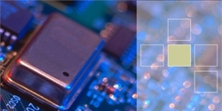
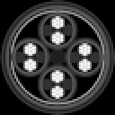

Links to other websites/documents/pages that are particularly useful and/or I enjoy. Let me know if you would like to be included.
| http://elm-chan.org/ | Contains many very-well documented projects, particularly with an embedded focus. Includes a line-scanning camera which produces excellent results. | |
| http://www.qrp.gr/ | Plenty of good electronics projects on a wide variety of topics, particularly with a radio focus. | |
| http://unixservice.com.au/ | Website with good step by step radio experiments. | |
| http://stevenmerrifield.com/ | Lots of interesting projects relating to instrumentation and measurement. Lots of nice pictures too. | |
|  | http://azurelectronics.com | Many examples of instrument repair, with many clear images. |
| https://g1yfg.blogspot.com/ | A new(ish) website with a few RF and fabrication posts. |
|  | http://sacamos.org/ | Extremely useful utility to create models of cable bundles for SPICE simulations. The GUI is a bit wonky but seems to work. |